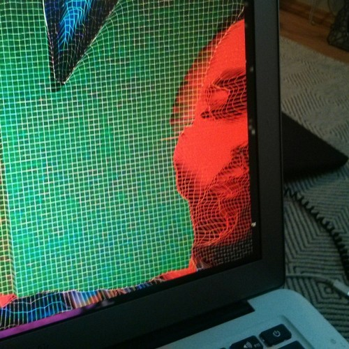

Ari Russo
New York, NY
Selected Projects
Capture by OfficeFern
, 2013. VHS Mining
Diamond
, 2011. MIDI Arpeggiator in Ruby
2
, 2003. Music, CDr
Links
Blog
Github
Instagram
Soundcloud
ari dot russo at gmail dot com